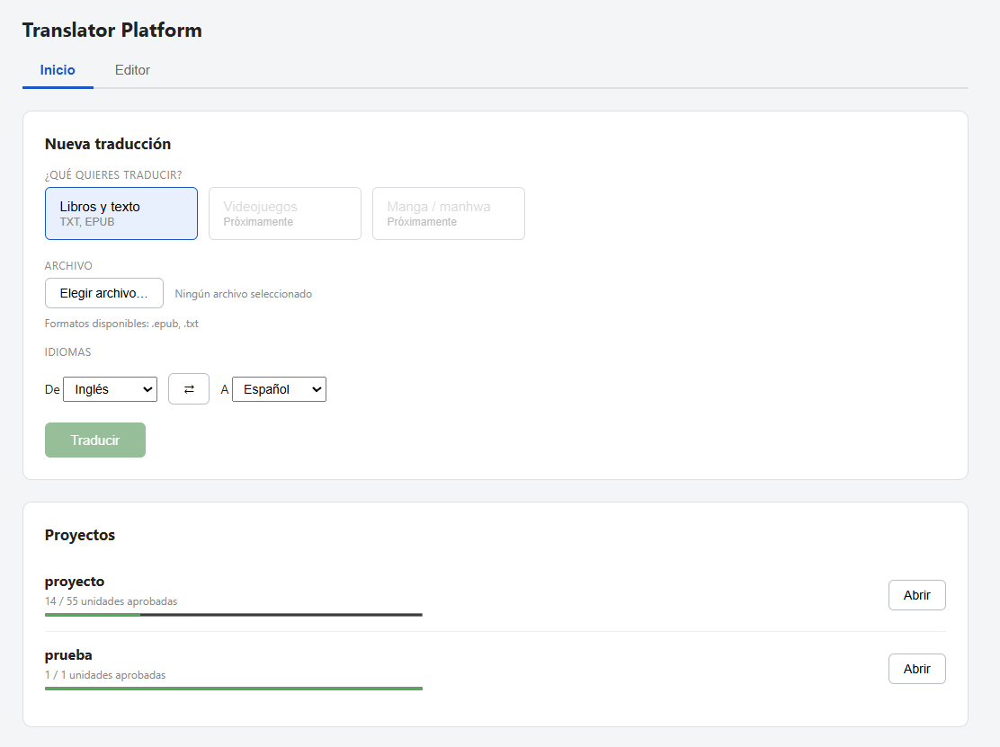
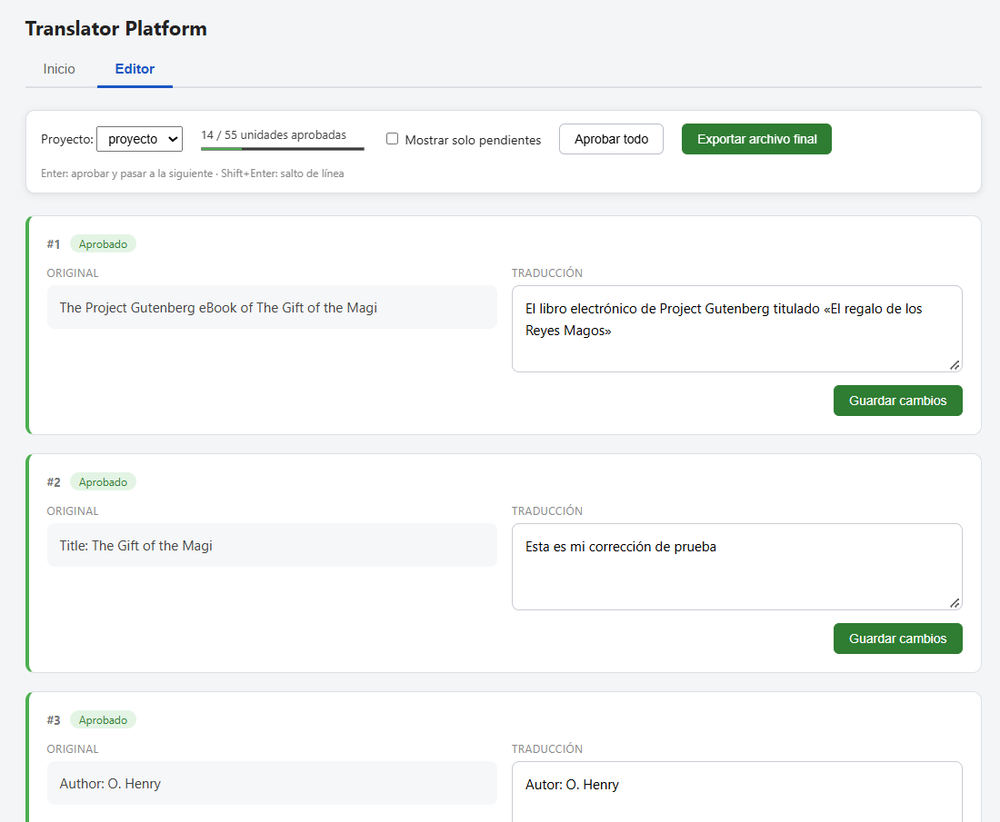

Proyecto personal · en desarrollo
Translator Platform
Traductor modular de documentos con revisión humana: traduce un archivo y permite corregirlo en un editor web antes de exportarlo.
- Arquitectura de plugins: parsers y proveedores intercambiables. Hoy procesa EPUB y TXT.
- Glosario y memoria de traducción en SQLite para mantener términos consistentes y ahorrar llamadas a la API.
Mi rol: diseño y desarrollo completos.
- Python
- FastAPI
- SQLite
- DeepL API
- JavaScript